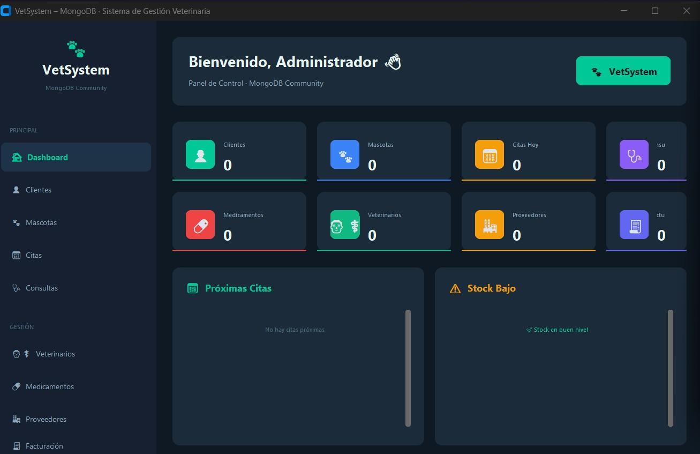

images/veterinaria.jpg
2025 · 5to
Veterinaria
Aplicación de gestión para clínicas veterinarias, desarrollada como proyecto independiente en Python.
- Python
Repositorio privado
Sin despliegue público